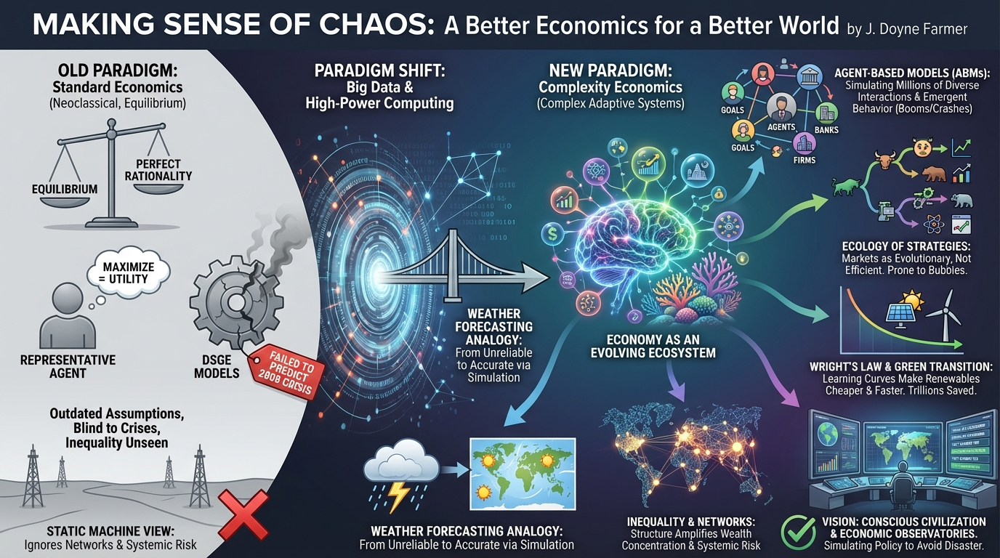

isbn-13: 9780300273779
Hardcover
AI Generated Content
Generated by gemini-3-pro-preview

Introduction
“Making Sense of Chaos: A Better Economics for a Better World” is both a scientific manifesto and a memoir by J. Doyne Farmer, a pioneer in the fields of chaos theory and complex systems. The book presents a compelling argument for a paradigm shift in how we understand and manage the global economy. Farmer argues that standard economic theory—specifically neoclassical economics—has failed to predict major events or solve systemic problems because it relies on outdated assumptions like “equilibrium” and “perfect rationality” [1].
Instead, Farmer proposes a new framework known as Complexity Economics. He suggests viewing the economy not as a static machine seeking balance, but as a Complex Adaptive System, similar to a biological ecosystem or the weather. By leveraging big data and high-power computing, Farmer posits that we can simulate the economy to make more accurate predictions and address existential challenges like financial instability and climate change [2].
Overview of the Key Points
Farmer details specific tools and models that differentiate Complexity Economics from the status quo.
Agent-Based Models (ABMs)
The core technological proposal of the book is the use of Agent-Based Models. Unlike standard models that often rely on a “representative agent” to stand in for all consumers, ABMs simulate millions of individual diverse agents—people, banks, and firms—interacting according to simple rules. These simulations allow complex, emergent behaviors, such as market crashes or booms, to arise naturally from bottom-up interactions, providing a more realistic picture of the economy [3].
The Ecology of Strategies
Drawing from his experience in financial trading, Farmer describes financial markets as an evolutionary “ecology” rather than an efficient system. In this view, different trading strategies compete, mutate, and die out, similar to species in nature. This evolutionary perspective helps explain why markets are inherently unstable and prone to bubbles, challenging the traditional “Efficient Market Hypothesis” [4].
The Weather Forecasting Analogy
A recurring analogy in the book is the comparison between economics and meteorology. Farmer notes that fifty years ago, weather forecasts were largely unreliable. However, through the application of physics-based models and massive data ingestion, meteorology has become a highly accurate science. He argues that economics must undergo a similar “scientific revolution,” abandoning abstract philosophy in favor of data-driven simulation [1].
Overview of the Key Themes
The book addresses several broad themes that extend beyond technical economics into policy and society.
The Failure of Standard Economics
Farmer critiques the current standard, particularly Dynamic Stochastic General Equilibrium (DSGE) models used by central banks. He argues these models failed to predict the 2008 financial crisis because they treat the financial sector as a neutral “veil” and assume the system always tends toward balance. He suggests that adhering to these flawed models blinds policymakers to systemic risks [2].
Climate Change and the Green Transition
A significant portion of the book applies complexity economics to the climate crisis. Farmer highlights Wright’s Law, which describes how costs drop predictably as production volume increases (learning curves). His models suggest that the transition to renewable energy will be significantly cheaper and faster than standard economists predict. He argues that an aggressive green transition could save the global economy trillions, rather than being a costly burden [3].
Inequality and Networks
Farmer explores how the structure of economic networks naturally leads to wealth concentration. While standard models often ignore the specific web of who owes money to whom, Farmer’s network approach reveals how debt linkages can amplify inequality and systemic risk. He illustrates how network effects can trap wealth in specific clusters, exacerbating social divides [4].
Conclusion
Farmer concludes with a vision for a “Conscious Civilization.” He advocates for the creation of “Economic Observatories”—large-scale public institutions dedicated to gathering real-time economic data and running massive simulations. By simulating policy decisions—such as lockdowns or carbon taxes—before they are implemented, society can avoid disastrous unintended consequences. Ultimately, Farmer is optimistic: he believes that if economics transforms into a true science based on data and simulation, it can guide humanity through the crises of the 21st century [1].
Further Reading
- The Origin of Wealth by Eric D. Beinhocker
- Complexity and the Economy by W. Brian Arthur
- Forecast: What Physics, Meteorology, and the Natural Sciences Can Teach Us About Economics by Mark Buchanan
- The End of Theory: Financial Crises, the Failure of Economics, and the Sweep of Human Interaction by Richard Bookstaber
Sources
- [1] Publisher’s description: https://www.penguin.co.uk/books/284357/making-sense-of-chaos-by-farmer-j-doyne/9780141981208
- [2] Review: Making Sense Of Chaos: https://www.ictineducation.org/home-page/making-sense-of-chaos-a-better-economics-for-a-better-world
- [3] J. Doyne Farmer on Complexity Economics: https://jimruttshow.blubrry.net/j-doyne-farmer/
- [4] Making Sense Of Chaos Chapter Summary: https://www.bookey.app/book/making-sense-of-chaos